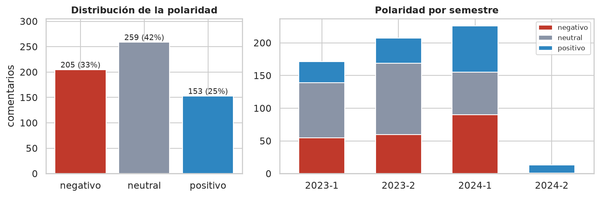
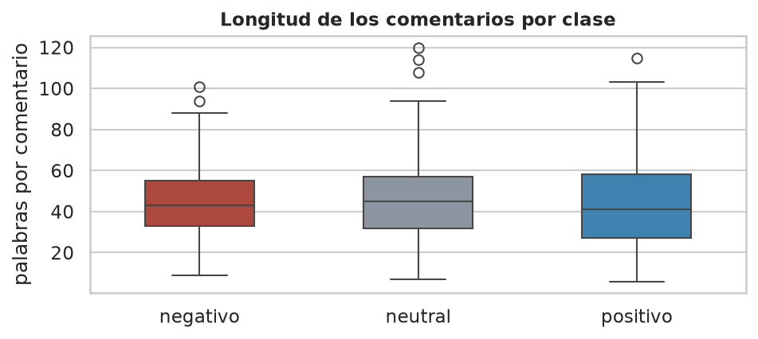
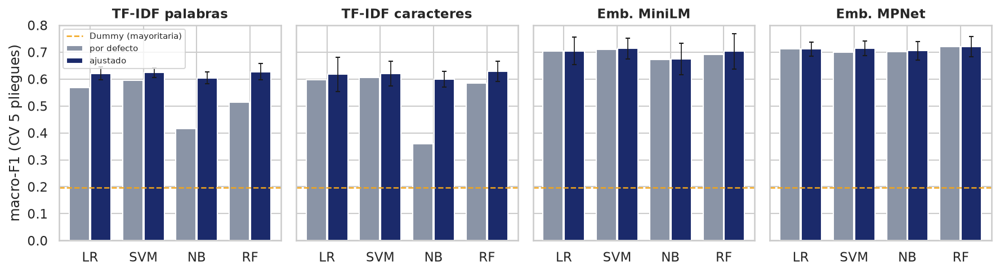
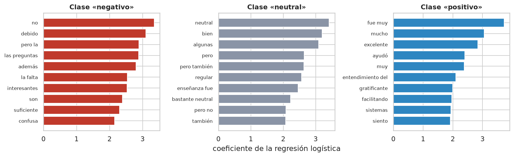
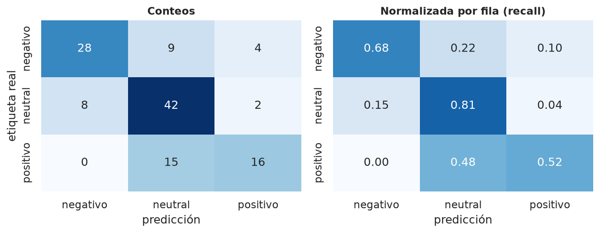
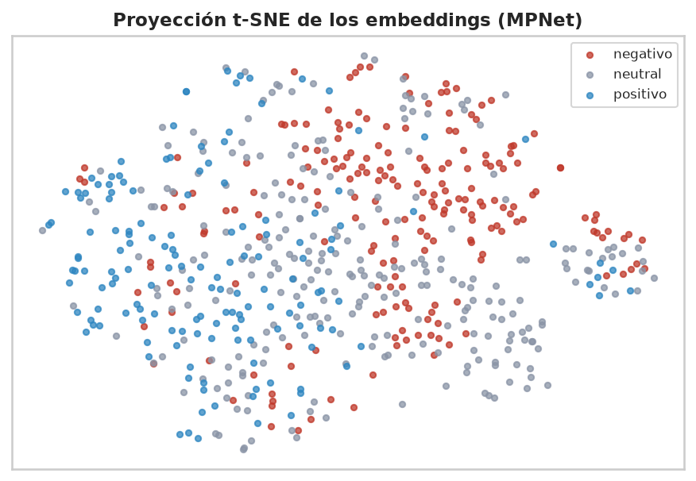

Clasificación automática de la polaridad en comentarios de evaluación docente: comparación de TF-IDF y embeddings semánticos
Objectives: to evaluate machine learning classifiers that assign polarity (positive, neutral or negative) to open-ended student comments about teaching, written in Spanish. Materials and methods: three CSV files were cleaned into 617 comments from seven computing courses and split 80/20 with stratified group partitioning to prevent leakage. Word and character TF-IDF were compared with two multilingual sentence-embedding models, and Logistic Regression, Linear SVM, Naive Bayes and Random Forest were trained against a DummyClassifier. Hyperparameters were tuned with GridSearchCV and five-fold stratified cross-validation using macro-F1. Results and discussion: embeddings outperformed TF-IDF by about nine macro-F1 points in cross-validation (0.72 vs. 0.63). The selected model (MPNet + Random Forest) reached 0.681 macro-F1 and 0.694 accuracy on the test set (95% CI: 0.58–0.76), versus 0.197 for the baseline. Most errors were mixed-sentiment comments; an LLM-assisted, manually validated audit found 8% of inconsistent labels. Conclusions: semantic embeddings are the better representation, but label quality limits performance more than the choice of classifier. The saved pipeline is ready to be integrated into an MVP.
Keywords: sentiment analysis, student evaluation of teaching, text classification, sentence embeddings, machine learning.
Objetivos: evaluar clasificadores que asignen la polaridad (positiva, neutral o negativa) a comentarios abiertos de estudiantes sobre la docencia, escritos en español. Materiales y métodos: se depuraron tres archivos CSV en 617 comentarios de siete cursos, divididos 80/20 con una partición estratificada por grupos, sin fuga de información. Se comparó TF-IDF de palabras y caracteres con dos modelos multilingües de embeddings y se entrenaron regresión logística, SVM lineal, Naive Bayes y Random Forest frente a un DummyClassifier. Los hiperparámetros se ajustaron con GridSearchCV y validación cruzada estratificada de cinco pliegues usando macro-F1. Resultados y discusión: los embeddings superaron a TF-IDF en cerca de nueve puntos de macro-F1 en validación cruzada (0,72 frente a 0,63). El modelo seleccionado (MPNet + Random Forest) obtuvo 0,681 de macro-F1 y 0,694 de exactitud en prueba (IC 95 %: 0,58–0,76), frente a 0,197 de la línea base. La mayoría de errores fueron comentarios con sentimiento mixto; una auditoría asistida por un LLM y validada manualmente encontró un 8 % de etiquetas incoherentes. Conclusiones: los embeddings semánticos son la mejor representación, pero la calidad de las etiquetas limita el desempeño más que el clasificador. El modelo guardado queda listo para un MVP.
Palabras clave: análisis de sentimiento, evaluación docente, clasificación de texto, embeddings de oraciones, aprendizaje automático.
Al final de cada semestre los estudiantes califican a sus profesores con escalas numéricas y, en muchos casos, con un comentario libre. Las escalas son fáciles de promediar, pero su relación con el aprendizaje real es discutida: un metaanálisis de estudios multisección encontró que las calificaciones de la evaluación docente prácticamente no se relacionan con lo que aprenden los estudiantes [1]. Los comentarios abiertos, en cambio, explican por qué un curso funcionó o no, y por eso tienen más valor para mejorar la docencia. El problema es el volumen: leer cientos de comentarios por curso no escala, y esa información termina sin usarse.
El análisis de sentimiento aplicado a la educación ha pasado por varias etapas [2], [3]. Los primeros trabajos usaron lexicones, listas de palabras con una polaridad asignada, y mostraron que un puntaje de sentimiento calculado así se correlaciona con las escalas Likert de la evaluación docente [4]. Luego llegaron los clasificadores supervisados sobre bolsas de palabras, que superaron a los lexicones en reseñas [5], y más recientemente los transformers como BERT [6] y los modelos de embeddings de oraciones como Sentence-BERT [7], que representan el significado de un texto completo en un vector. Los modelos de lenguaje de gran tamaño (LLM) también se usan ya como anotadores: en tareas de clasificación de texto, ChatGPT ha superado a anotadores de crowdsourcing en exactitud y en acuerdo entre codificadores [8].
A pesar de estos avances, las revisiones coinciden en que la adopción práctica es baja: faltan conjuntos de datos estructurados, soluciones estandarizadas y herramientas que se integren a los procesos institucionales [2]. El objetivo de este trabajo es dar el primer paso para cerrar esa brecha: construir y evaluar de forma reproducible un clasificador de polaridad para comentarios de evaluación docente en español, comparar representaciones clásicas (TF-IDF) con representaciones semánticas (embeddings) y dejar un modelo serializado que pueda integrarse en un producto mínimo viable (MVP). Además del desempeño, se analiza con detalle la calidad del conjunto de datos, porque, como se verá, es el factor que más limita los resultados.
Todo el trabajo se desarrolló en Python 3.13 con pandas, scikit-learn 1.9 [9] y sentence-transformers 6.2, con una semilla fija (SEED = 42). El procedimiento sigue siete pasos: (1) carga y exploración, (2) definición de la tarea y preprocesamiento, (3) división de datos, (4) representación del texto, (5) línea base, (6) ajuste de hiperparámetros y (7) evaluación final. El código está en proyecto/src/ (depurar.py, preprocesamiento.py, representaciones.py y experimentos.py).
El conjunto de datos está formado por tres archivos CSV con comentarios de estudiantes de siete cursos de computación (Sistemas operativos, Arquitectura del computador, Programación paralela, Sistemas distribuidos, Sistemas Inteligentes, Fundamentos de programación y Bases de datos) entre los semestres 2023-1 y 2024-2. Cada fila tiene ocho columnas: id, curso, feedback (el comentario), polaridad_basica, grano_fino, emocion, aspectos (lista JSON de pares aspecto–sentimiento) y semestre. Los comentarios ya vienen anonimizados: el nombre del profesor aparece reemplazado por «Profesor». La Tabla 1 resume los problemas de calidad encontrados y el tratamiento aplicado a cada uno.
| Problema | Evidencia | Tratamiento |
|---|---|---|
| Fila de encabezado repetida dentro de los archivos | 4 filas con id = "id" | Eliminadas (622 → 618 filas) |
Los id reinician en cada archivo | Tres secuencias que empiezan en 1 | Nuevo identificador global id_global |
| Etiqueta de polaridad con nueve formatos distintos | neutral, ['neutral'], positiva, ["['positivo']"], entre otros | Normalizada a tres clases; 1 fila con etiqueta inválida (['posicion']) descartada |
| Error tipográfico en el nombre del curso | «Sistemas opertativos» | Corregido |
grano_fino y emocion casi constantes | 99 % con valor 3; 99 % «neutral» | Descartadas como variable objetivo |
| Aspectos con nombres no normalizados | 22 nombres distintos, con sinónimos parciales | Fuera del alcance (trabajo futuro) |
| Duplicados | 0 exactos; 1 par con similitud coseno ≥ 0,7 | Agrupados para la división (paso 3) |
| Textos que no son evaluaciones | 3 textos (ids 603, 607 y 616), p. ej. «Estimado estudiante, recuerda…» | Conservados y documentados (sección de Resultados) |
Tras la depuración quedaron 617 comentarios con una longitud mediana de 44 palabras (entre 6 y 120). La distribución de clases es moderadamente desbalanceada: 259 neutrales (42 %), 205 negativos (33 %) y 153 positivos (25 %). La Figura 1 muestra que la proporción cambia según el semestre, y que 2024-2 apenas tiene 13 comentarios, casi todos positivos.

La tarea es una clasificación multiclase de un solo nivel: dado un comentario, predecir si su polaridad es positiva, neutral o negativa. Se eligió polaridad_basica porque es la única etiqueta con variabilidad suficiente. Como el conjunto no incluye una guía de anotación, se redactaron los criterios de la Tabla 2 con apoyo de un LLM; estos criterios se usaron después para auditar las etiquetas y clasificar los errores.
| Clase | Criterio |
|---|---|
| Positivo | Predomina la valoración favorable del curso o del profesor; las críticas, si existen, son menores o se presentan como matices. |
| Negativo | Predomina la insatisfacción; los elogios, si existen, son secundarios frente a los problemas señalados. |
| Neutral | Elogios y críticas tienen un peso similar, o el comentario es descriptivo y sin carga emocional clara. |
| No aplica | El texto no es una evaluación de un curso (mensajes dirigidos al estudiante, respuestas de un asistente de IA). |
Para la normalización del texto se escribió una función que pasa a minúsculas, aplica la normalización Unicode NFKC, reemplaza números por <num>, convierte emojis y emoticonos en tokens con polaridad (emoji_positivo, emoji_negativo) y colapsa espacios. El conjunto actual no contiene emojis, pero el tratamiento queda listo para el MVP. Como variante, los intensificadores («muy», «bastante», «demasiado») y los negadores («no», «sin», «nunca») se unieron con la palabra siguiente, de modo que «no fue claro» genera el token no_fue además de las palabras sueltas. Esta variante se trató como un hiperparámetro más en el paso 6.
La exploración mostró dos rasgos que anticipan la dificultad de la tarea. Primero, el 83 % de los comentarios contiene un conector de contraste («pero», «sin embargo», «aunque», «a pesar»), es decir, la mayoría mezcla elogios y críticas. Segundo, la longitud no separa las clases (mediana de 43, 45 y 41 palabras para negativo, neutral y positivo; Figura 2), así que el modelo debe apoyarse en el contenido.

Se separó el 80 % para entrenamiento (493 comentarios) y el 20 % para prueba (124), estratificando por clase. La guía del proyecto pide agrupar por autor para que los comentarios de una misma persona no queden a ambos lados de la división, pero el conjunto no tiene una columna de autor. Como aproximación, se construyeron grupos uniendo comentarios con similitud coseno TF-IDF mayor o igual a 0,7 (componentes conexas del grafo de similitud) y se usó StratifiedGroupKFold, que estratifica por clase y mantiene cada grupo completo en un solo lado. Solo apareció un par de casi-duplicados (616 grupos), pero el mecanismo garantiza la ausencia de fuga por textos repetidos [10]. La validación cruzada de los pasos 5 y 6 se hizo con el mismo esquema (cinco pliegues) dentro del conjunto de entrenamiento; el conjunto de prueba no se usó hasta el paso 7.
Se compararon cuatro representaciones, dos clásicas y dos semánticas:
paraphrase-multilingual-MiniLM-L12-v2, que produce vectores de 384 dimensiones. Es una versión multilingüe de Sentence-BERT obtenida por destilación de conocimiento [7], [12] sobre la arquitectura MiniLM [13].paraphrase-multilingual-mpnet-base-v2, de 768 dimensiones, entrenado con el mismo procedimiento [12] sobre MPNet [14].Los vectorizadores TF-IDF se ajustan dentro de un Pipeline de scikit-learn, de modo que en cada pliegue el vocabulario y los pesos IDF se aprenden solo con los datos de entrenamiento. Los modelos de embeddings son preentrenados y no se ajustan con el corpus: cada comentario se codifica de forma independiente, así que no hay fuga de información. Ambos modelos se ejecutaron localmente en CPU, sin enviar los comentarios a servicios externos; codificar los 617 comentarios con los dos modelos tomó 92 segundos.
Como referencia mínima se usaron dos DummyClassifier: uno que siempre predice la clase mayoritaria (neutral) y otro que predice al azar respetando la proporción de clases. Sobre cada representación se entrenaron cuatro clasificadores [15]: regresión logística (LR), SVM lineal [16], Naive Bayes (multinomial para TF-IDF [17] y gaussiano para embeddings, que tienen valores negativos) y Random Forest con 300 árboles [18]. Primero se evaluaron con sus hiperparámetros por defecto, mediante validación cruzada.
Para cada combinación de representación y clasificador se hizo una búsqueda exhaustiva con GridSearchCV sobre el Pipeline completo, con la validación cruzada agrupada y estratificada del paso 3 y el macro-F1 como criterio de selección. Se eligió macro-F1 porque promedia el F1 de las tres clases sin ponderar por su tamaño, de modo que la clase positiva, la minoritaria, pesa igual que las demás [19]. Como las rejillas son pequeñas (entre 4 y 64 combinaciones), la búsqueda exhaustiva resultó viable y no fue necesario recurrir a RandomizedSearchCV. La Tabla 3 resume las rejillas.
| Componente | Valores explorados |
|---|---|
| TF-IDF palabras | n-gramas (1,1) o (1,2); min_df 1 o 2; preprocesamiento básico o con marcado de negación e intensificadores |
| TF-IDF caracteres | n-gramas (2,4) o (3,5); min_df 1 o 2 |
| Regresión logística | C ∈ {0,1; 1; 10; 100}; class_weight ∈ {ninguno, balanced} |
| SVM lineal | C ∈ {0,01; 0,1; 1; 10}; class_weight ∈ {ninguno, balanced} |
| Naive Bayes | Multinomial: alpha ∈ {0,01; 0,1; 0,5; 1}. Gaussiano: var_smoothing ∈ {10⁻⁹; 10⁻⁶; 10⁻³; 10⁻¹} |
| Random Forest | max_depth ∈ {ninguna, 20}; min_samples_leaf ∈ {1, 3}; class_weight ∈ {ninguno, balanced_subsample} |
El modelo final se seleccionó por su macro-F1 en validación cruzada, no por su resultado en prueba, para que la evaluación en prueba sea una estimación honesta. Sobre el conjunto de prueba se calcularon exactitud, precisión, exhaustividad (recall) y macro-F1, la matriz de confusión y un intervalo de confianza del 95 % para el macro-F1 mediante bootstrap (2.000 remuestreos). Por último, los comentarios mal clasificados se revisaron uno por uno y se agruparon en categorías.
Siguiendo la guía del curso, se usó un LLM (Claude) como asistente metodológico: para explorar el esquema del CSV, redactar los criterios de etiquetado, proponer rangos de hiperparámetros, categorizar los errores y hacer una auditoría de etiquetas sobre una muestra aleatoria de 50 comentarios. Como las etiquetas generadas por un LLM requieren validación humana, se revisaron manualmente los 28 casos en los que el LLM cuestionó la etiqueta o señaló un caso especial (etiquetas incoherentes o incorrectas, casos discutibles, errores del modelo y textos que no son evaluaciones) y en todos se confirmó el juicio. Los casos que el LLM consideró coherentes o mixtos conservan su clasificación original. Los comentarios ya estaban anonimizados y los embeddings se calcularon localmente.
La Tabla 4 y la Figura 3 muestran el macro-F1 en validación cruzada antes y después del ajuste. Todos los modelos superan con amplitud a las dos líneas base (0,197 y 0,340). La diferencia más grande la marca la representación: con embeddings, cualquier clasificador queda entre 0,67 y 0,72, mientras que con TF-IDF el mejor llega a 0,63. El ajuste de hiperparámetros ayuda mucho a los modelos sobre TF-IDF (Naive Bayes pasa de 0,42 a 0,61 al reducir alpha, y Random Forest de 0,51 a 0,63 al balancear clases), pero casi nada a los modelos sobre embeddings, que ya funcionaban bien con sus valores por defecto.
| Clasificador | TF-IDF palabras | TF-IDF caracteres | Emb. MiniLM | Emb. MPNet |
|---|---|---|---|---|
| Regresión logística | 0,568 → 0,621 | 0,598 → 0,618 | 0,703 → 0,704 | 0,712 → 0,712 |
| SVM lineal | 0,594 → 0,624 | 0,606 → 0,621 | 0,711 → 0,714 | 0,699 → 0,714 |
| Naive Bayes | 0,417 → 0,605 | 0,360 → 0,600 | 0,673 → 0,674 | 0,702 → 0,706 |
| Random Forest | 0,514 → 0,627 | 0,585 → 0,629 | 0,691 → 0,703 | 0,721 → 0,721 |
| Dummy (mayoritaria): 0,197 · Dummy (estratificado): 0,340 | ||||

El marcado de negaciones e intensificadores no mejoró TF-IDF: con regresión logística, la mejor configuración con preprocesamiento básico obtuvo 0,621 y la mejor con marcado 0,615. Una explicación es que los bigramas ya capturan la mayor parte de esas combinaciones («no fue», «muy claro»), así que el marcado solo agrega dimensiones redundantes.
La Figura 4 muestra los términos con mayor peso en la regresión logística sobre TF-IDF de palabras. Para la clase negativa aparecen «no», «la falta» y «confusa», y para la positiva «fue muy», «excelente» y «ayudó», lo cual es coherente. Pero para la clase neutral los términos más fuertes son «neutral» y «bastante neutral»: al revisar el corpus se encontró que el 25 % de los comentarios neutrales contiene literalmente la palabra «neutral» o «neutro» («la enseñanza fue bastante neutral»), frente al 5 % de los negativos. Esto sugiere que parte de los comentarios fue generada a partir de la etiqueta, un rasgo que facilita artificialmente la tarea y que no se espera en comentarios reales.

El modelo con mejor macro-F1 en validación cruzada fue embeddings MPNet + Random Forest (0,721), con los hiperparámetros por defecto (sin profundidad máxima, una muestra mínima por hoja y sin pesos de clase). La Tabla 5 resume el macro-F1 en prueba de todas las combinaciones ajustadas. El modelo seleccionado obtuvo también el mejor resultado en prueba: macro-F1 de 0,681, exactitud de 0,694, precisión macro de 0,714 y exhaustividad macro de 0,669. El intervalo de confianza del 95 % para el macro-F1 es [0,583; 0,759]. Es un intervalo amplio, propio de un conjunto de prueba de 124 comentarios, y contiene a los demás modelos basados en embeddings: entre ellos no hay diferencias que se puedan afirmar con estos datos. Lo que sí se mantiene en validación cruzada y en prueba es la ventaja de los embeddings sobre TF-IDF.
| Clasificador | TF-IDF palabras | TF-IDF caracteres | Emb. MiniLM | Emb. MPNet |
|---|---|---|---|---|
| Regresión logística | 0,581 | 0,598 | 0,680 | 0,663 |
| SVM lineal | 0,583 | 0,575 | 0,665 | 0,677 |
| Naive Bayes | 0,535 | 0,582 | 0,665 | 0,630 |
| Random Forest | 0,560 | 0,623 | 0,634 | 0,681 |
| Dummy (mayoritaria): 0,197 (exactitud 0,419) · Dummy (estratificado): 0,323 | ||||
La Tabla 6 y la Figura 5 desglosan el resultado por clase. La clase negativa es la mejor reconocida (F1 de 0,73) y la positiva la peor (0,60). El patrón de la matriz de confusión es claro: el modelo casi nunca confunde los extremos (ningún negativo se predijo como positivo y solo 4 positivos como negativos), pero tiende a refugiarse en la clase neutral. De los 31 comentarios positivos, 15 se predijeron como neutrales, y por eso el recall positivo es apenas 0,52 mientras el neutral llega a 0,81.
| Clase | Precisión | Recall | F1 | Soporte |
|---|---|---|---|---|
| Negativo | 0,778 | 0,683 | 0,727 | 41 |
| Neutral | 0,636 | 0,808 | 0,712 | 52 |
| Positivo | 0,727 | 0,516 | 0,604 | 31 |
| Macro | 0,714 | 0,669 | 0,681 | 124 |

La proyección t-SNE de los embeddings (Figura 6) ayuda a entender ese límite. Los negativos se concentran en una región y los positivos en otra, pero los neutrales están repartidos por todo el espacio y se superponen con ambas clases. En otras palabras, la frontera entre «neutral» y las otras dos clases no está bien definida ni siquiera en un espacio semántico.

Los 38 comentarios de prueba mal clasificados se agruparon en cuatro categorías (Tabla 7). Dos tercios son comentarios con sentimiento mixto o ambiguo, donde la etiqueta asignada es defendible pero la otra opción también lo sería. Un ejemplo es «El curso fue bastante interesante, pero en algunos momentos se me hizo un poco abrumador… Afortunadamente, los contenidos fueron bien organizados», etiquetado como positivo y predicho como neutral. El efecto de los conectores de contraste se nota en las cifras: la exactitud es de 0,68 en los 108 comentarios de prueba que los contienen y de 0,81 en los 16 que no, aunque esta segunda cifra se basa en muy pocos casos.
| Categoría | n | Descripción y ejemplo |
|---|---|---|
| Sentimiento mixto o ambiguo | 25 (66 %) | Elogios y críticas en el mismo texto, o valoración tenue; la frontera con «neutral» es subjetiva. Ej.: «Estoy bastante satisfecho… aunque algunas veces la carga de trabajo fue algo alta» (real: positivo; predicho: neutral). |
| Etiqueta probablemente incorrecta | 9 (24 %) | La predicción es más razonable que la etiqueta. Ej.: «El curso no tiene una organización clara… me genera una sensación de confusión y pérdida de tiempo» (real: neutral; predicho: negativo). |
| Error claro del modelo | 2 (5 %) | La etiqueta es correcta y el texto no es ambiguo. Ej.: «La disponibilidad de los recursos en el aula digital fue muy satisfactoria…» (real: positivo; predicho: neutral). |
| Texto que no es una evaluación | 2 (5 %) | Artefactos de generación automática, sin respuesta correcta posible. Ej.: «Estimado estudiante, recuerda que la satisfacción en tu aprendizaje es importante… [Tu nombre]». |
Los dos textos que no son evaluaciones merecen una aclaración. Uno es un mensaje dirigido a un estudiante y el otro una respuesta típica de un asistente de IA («Lo siento, pero como estudiante universitario, no tengo la capacidad…»). En el conjunto traen una etiqueta, pero la pregunta sobre su polaridad no aplica, así que cualquier predicción es arbitraria. Una búsqueda por palabras clave en todo el corpus encontró un tercer caso en el conjunto de entrenamiento («Estoy encantada de haber podido asistirte hoy…», etiquetado como positivo). Son 3 de 617 textos (0,5 %), un efecto despreciable sobre las métricas, por lo que se conservaron y se documentan aquí.
Para saber si el ruido de etiquetas se limita a los errores o afecta a todo el corpus, se auditó una muestra aleatoria de 50 comentarios con los criterios de la Tabla 2 (Tabla 8). El 68 % tiene una etiqueta coherente con el texto, el 24 % es discutible por sentimiento mixto y el 8 % es claramente incoherente, como «En general, mi experiencia fue satisfactoria aunque con algunas dificultades al principio», etiquetado como negativo. Con un 8 % de etiquetas incorrectas y un 24 % de casos ambiguos, el techo alcanzable por cualquier clasificador queda bastante por debajo de 1, y parte de lo que el modelo aprende es el propio ruido [20].
| Juicio sobre la etiqueta | Comentarios | Porcentaje |
|---|---|---|
| Coherente con el texto | 34 | 68 % |
| Discutible (sentimiento mixto) | 12 | 24 % |
| Incoherente con el texto | 4 | 8 % |
El Pipeline completo (codificador de embeddings + Random Forest) se guardó con joblib, junto con un archivo de metadatos que registra las métricas, los hiperparámetros, las versiones de Python y de las librerías y un hash del conjunto de datos. Al cargarlo en un proceso limpio, el modelo tarda unos 8 segundos en iniciar (por la carga de MPNet) y luego clasifica 100 comentarios en 1,9 segundos, unos 18 ms por comentario en CPU. También devuelve probabilidades por clase, que el MVP podrá mostrar como nivel de confianza. Una prueba con un texto vacío devolvió «neutral» con probabilidades casi uniformes (0,33 / 0,39 / 0,28), así que el MVP deberá validar la entrada antes de llamar al modelo.
Se construyó y evaluó de forma reproducible un clasificador de polaridad para comentarios de evaluación docente en español. La conclusión principal es que la representación importa más que el clasificador: los embeddings multilingües de oraciones superaron a TF-IDF en cerca de nueve puntos de macro-F1, de forma consistente en validación cruzada y en prueba, mientras que entre los cuatro clasificadores sobre embeddings las diferencias fueron pequeñas y no significativas. El modelo seleccionado, MPNet + Random Forest, obtuvo un macro-F1 de 0,681 en prueba, más del triple que la línea base mayoritaria.
La segunda conclusión es que el límite actual está en los datos. Dos de cada tres errores son comentarios con sentimiento mixto, el 83 % del corpus contiene conectores de contraste, y la auditoría de etiquetas encontró un 8 % de etiquetas incoherentes. Además, la presencia literal de la palabra «neutral» en muchos comentarios neutrales y de textos que no son evaluaciones indica que parte del corpus fue generada automáticamente, así que los resultados deben validarse con comentarios reales antes de usarse en decisiones institucionales.
Como trabajo futuro se propone: (1) reetiquetar con los criterios de la Tabla 2, sobre todo en la frontera entre neutral y las otras clases, y medir el acuerdo entre anotadores; (2) aprovechar la columna de aspectos, normalizando sus 22 nombres, para pasar de una polaridad global a una polaridad por aspecto, que es más accionable para el docente; (3) probar el ajuste fino de un transformer en español; y (4) integrar el Pipeline guardado en un MVP con una API y una interfaz sencilla que acepte comentarios individuales o archivos CSV, e incluya un filtro que descarte textos que no sean evaluaciones.
[1] B. Uttl, C. A. White, and D. W. Gonzalez, “Meta-analysis of faculty’s teaching effectiveness: Student evaluation of teaching ratings and student learning are not related,” Stud. Educ. Eval., vol. 54, pp. 22–42, 2017, doi: 10.1016/j.stueduc.2016.08.007.
[2] Z. Kastrati, F. Dalipi, A. S. Imran, K. Pireva Nuci, and M. A. Wani, “Sentiment analysis of students’ feedback with NLP and deep learning: A systematic mapping study,” Appl. Sci., vol. 11, no. 9, Art. no. 3986, 2021, doi: 10.3390/app11093986.
[3] T. Shaik, X. Tao, C. Dann, H. Xie, Y. Li, and L. Galligan, “Sentiment analysis and opinion mining on educational data: A survey,” Nat. Lang. Process. J., vol. 2, Art. no. 100003, 2023, doi: 10.1016/j.nlp.2022.100003.
[4] Q. Rajput, S. Haider, and S. Ghani, “Lexicon-based sentiment analysis of teachers’ evaluation,” Appl. Comput. Intell. Soft Comput., vol. 2016, Art. no. 2385429, 2016, doi: 10.1155/2016/2385429.
[5] B. Pang, L. Lee, and S. Vaithyanathan, “Thumbs up? Sentiment classification using machine learning techniques,” in Proc. Conf. Empirical Methods Natural Lang. Process. (EMNLP), 2002, pp. 79–86.
[6] J. Devlin, M.-W. Chang, K. Lee, and K. Toutanova, “BERT: Pre-training of deep bidirectional transformers for language understanding,” in Proc. NAACL-HLT, 2019, pp. 4171–4186.
[7] N. Reimers and I. Gurevych, “Sentence-BERT: Sentence embeddings using Siamese BERT-networks,” in Proc. EMNLP-IJCNLP, 2019, pp. 3982–3992.
[8] F. Gilardi, M. Alizadeh, and M. Kubli, “ChatGPT outperforms crowd workers for text-annotation tasks,” Proc. Natl. Acad. Sci. USA, vol. 120, no. 30, Art. no. e2305016120, 2023, doi: 10.1073/pnas.2305016120.
[9] F. Pedregosa et al., “Scikit-learn: Machine learning in Python,” J. Mach. Learn. Res., vol. 12, pp. 2825–2830, 2011.
[10] S. Kaufman, S. Rosset, C. Perlich, and O. Stitelman, “Leakage in data mining: Formulation, detection, and avoidance,” ACM Trans. Knowl. Discov. Data, vol. 6, no. 4, Art. no. 15, 2012.
[11] G. Salton and C. Buckley, “Term-weighting approaches in automatic text retrieval,” Inf. Process. Manage., vol. 24, no. 5, pp. 513–523, 1988.
[12] N. Reimers and I. Gurevych, “Making monolingual sentence embeddings multilingual using knowledge distillation,” in Proc. EMNLP, 2020, pp. 4512–4525, doi: 10.18653/v1/2020.emnlp-main.365.
[13] W. Wang, F. Wei, L. Dong, H. Bao, N. Yang, and M. Zhou, “MiniLM: Deep self-attention distillation for task-agnostic compression of pre-trained transformers,” in Adv. Neural Inf. Process. Syst., vol. 33, 2020, pp. 5776–5788.
[14] K. Song, X. Tan, T. Qin, J. Lu, and T.-Y. Liu, “MPNet: Masked and permuted pre-training for language understanding,” in Adv. Neural Inf. Process. Syst., vol. 33, 2020, pp. 16857–16867.
[15] C. M. Bishop, Pattern Recognition and Machine Learning. New York, NY, USA: Springer, 2006.
[16] C. Cortes and V. Vapnik, “Support-vector networks,” Mach. Learn., vol. 20, no. 3, pp. 273–297, 1995.
[17] A. McCallum and K. Nigam, “A comparison of event models for naive Bayes text classification,” in Proc. AAAI-98 Workshop Learn. Text Categorization, 1998, pp. 41–48.
[18] L. Breiman, “Random forests,” Mach. Learn., vol. 45, no. 1, pp. 5–32, 2001.
[19] M. Sokolova and G. Lapalme, “A systematic analysis of performance measures for classification tasks,” Inf. Process. Manage., vol. 45, no. 4, pp. 427–437, 2009.
[20] B. Frénay and M. Verleysen, “Classification in the presence of label noise: A survey,” IEEE Trans. Neural Netw. Learn. Syst., vol. 25, no. 5, pp. 845–869, 2014.